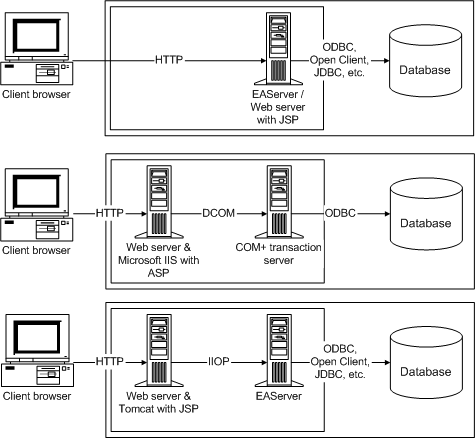

 Web server is built in to EAServer As shown in the first configuration, EAServer has a built-in
Web server, so this configuration demonstrates the full capability
of EAServer.
Web server is built in to EAServer As shown in the first configuration, EAServer has a built-in
Web server, so this configuration demonstrates the full capability
of EAServer.
Using the Web DataWindow with EAServer
If you are not running your Web server as a service and you
have a user CLASSPATH environment variable, make sure that this
variable includes the paths to all classes needed for communication
between the Web server and EAServer.
This includes the Sybase\EAServer\html\classes
directory and the path to any component stubs that you generate
for use with your Web pages
(if these are in a different
directory). When you install EAServer,
the path information for the server is placed only in the system
CLASSPATH variable, not the user variable.
Using the Web DataWindow with Tomcat
To use Web DataWindows and access EAServer components in JSP pages that you deploy to a Tomcat server, you must add the following JAR files and classes to the class path used by Tomcat at startup:
- jconn2.jar
- easclient.jar
- easj2ee.jar
- EAServer_home\html\classes
- EAServer_home\java\classes
where EAServer_home is the full path to the EAServer where the Web DataWindow component is installed. To add the required files to the Tomcat class path, you need to edit the catalina.bat file in the Tomcat bin directory.
Using the Web DataWindow with a COM component
You can also use the Web DataWindow with Microsoft servers, but more configuration tasks are required.
 Only the HTML Web DataWindow is supported No changes were made to the ASP Object model for PowerBuilder
10.5. The GenerateXMLWeb and GenerateXHTML methods are therefore
not supported.
Only the HTML Web DataWindow is supported No changes were made to the ASP Object model for PowerBuilder
10.5. The GenerateXMLWeb and GenerateXHTML methods are therefore
not supported.
On COM+, you access the COM version of the generic server component (PowerBuilder.HTMLDataWindow) using automation methods called from the page server. For example, to instantiate the generic COM component from ASP:
dwGen = Server.CreateObject(
"PowerBuilder.HTMLDataWindow")
The COM server component is provided in PBDWR105.DLL. You can also write your own custom class user object based on the sample source code in PBDWRMT.PBL.
For more information about building Web pages that use the Web DataWindow server component, see "Instantiating and configuring the server component". For information on using the Web DataWindow COM server component from a JSP page, see the white paper on the Sybase Web site .
You need to register the COM server component and install PowerBuilder runtime files and the PBL or PBD containing your DataWindow objects on the COM+ server computer.
Transaction server configuration tasks
The following table summarizes the configuration tasks you need to perform on the transaction server:
| Server | Tasks |
|---|---|
| EAServer or COM+ | Copy the PBLs, PBDs, SRDs, or PSRs containing the definitions of your DataWindow objects to a directory on the EAServer server's path or the system path if the server component is running as a service (always true for COM+). |
| EAServer | Set up a DSN and a connection cache for your data source. |
| ASP (IIS) with COM+ |
If COM+ is hosting the server component and running on a different computer from IIS, create a client install package using COM+ Explorer and install it on the IIS machine. For more information, see the COM+ documentation. |
| JSP (Tomcat) with COM+ | To use a COM+ component with a JSP page running on Tomcat or another JSP server, you need to use a Java-COM bridge. For more information, see the white paper on "How to set up a JSP that uses a DW DTC to access the Web DW on MTS via Tomcat" on the Sybase Web site . |
Page server configuration tasks
The following table summarizes the configuration tasks you need to perform on the page server: